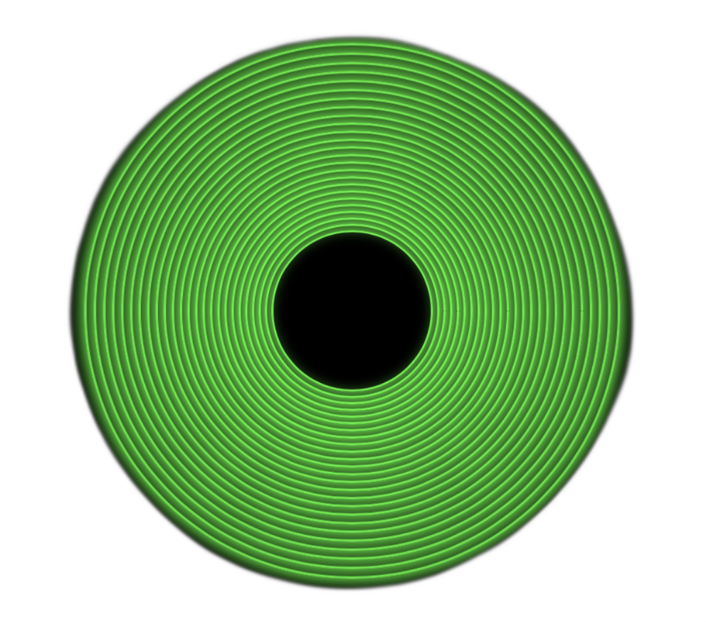

login:
Password:

SYSTEM42 ARPA
UNIX/32V - PDP-11/70 Compatible System
Teletype Corp. Model ASR-37 Terminal
Berkeley Software Distribution - Version 1.0
Memory: 128K words | Disk: RK05 Cartridge
Login TTY: /dev/tty03 at 300 baud
Login: Mon Aug 4 14:30:21 PDT 1975
%
UNIX/32V Terminal - Press any key to continue
PDP-11/70 System Idle - Matrix Mode
UNIX/32V Terminal - Press any key to continue
PDP-11/70 System Idle - Oscilloscope Mode
MUTT Terminal Menu v1.0
[X]
>
About System
System information and details
Projects
Portfolio and work examples
Contact
Get in touch information
Help
Command reference and usage
Ping
Test network connectivity
Traceroute
Trace network path
Networking
Network tools menu